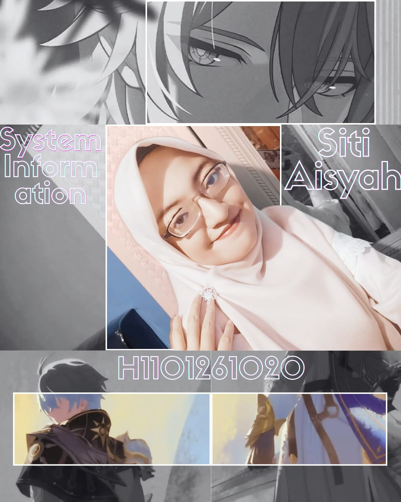
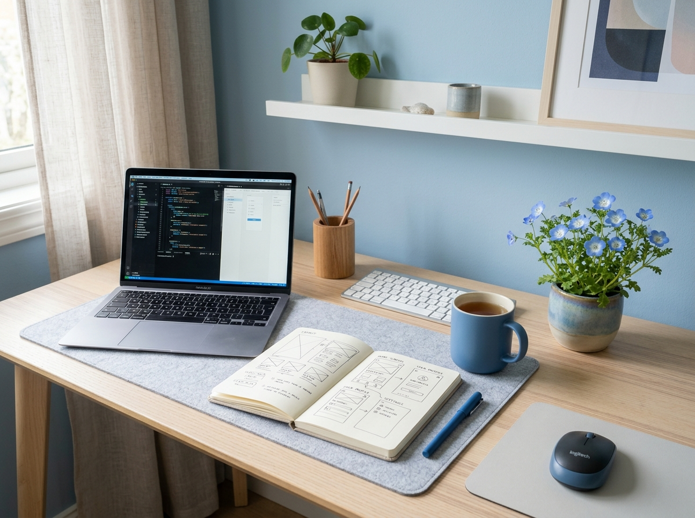

SITI AISYAH
RESEARCH & Solutions
Mahasiswa Sistem Informasi Universitas Tanjungpura angkatan 2026. Berfokus pada UI/UX Research dan bisnis manajemen: menyelami reaksi pengguna, mengurai akar masalah pada aplikasi atau web, serta menghadirkan rekomendasi solusi digital yang inovatif, solutif, dan efisien.


HALO, SAYA SITI AISYAH!
MAHASISWA SISTEM INFORMASI UNTAN & UI/UX RESEARCH ENTHUSIAST
Mahasiswa S1 Sistem Informasi Universitas Tanjungpura angkatan 2026. Saya sangat tertarik pada bidang UI/UX Research—senang mengamati kesan, interaksi, dan respon nyata orang-orang saat menggunakan teknologi, lalu mendiagnosis akar masalahnya untuk merumuskan rekomendasi solusi yang inovatif, terarah, dan efisien. Di samping itu, saya berfokus pada ranah bisnis dan manajemen sistem informasi untuk memastikan solusi digital selaras dengan efisiensi operasional.
WHAT I DO & STUDY
UI/UX Research & Testing
Menggali reaksi dan kesan autentik pengguna saat berinteraksi dengan aplikasi, mengidentifikasi friction, dan merumuskan solusi antarmuka yang intuitif.
Bisnis & Manajemen SI
Menganalisis proses bisnis, memetakan kebutuhan operasional organisasi, dan menyelaraskan solusi sistem informasi agar tepat guna dan efisien.
Problem Discovery & Solusi
Mendiagnosis kendala digital yang dialami pengguna, membedah pola masalah mendalam, dan menghadirkan alternatif solusi kreatif yang aplikatif.
Strategic Resource Planning
Keahlian manajemen alokasi sumber daya terukur, forecasting kebutuhan mendatang, serta ketahanan fokus eksekusi (endurance) tinggi dalam mencapai target.